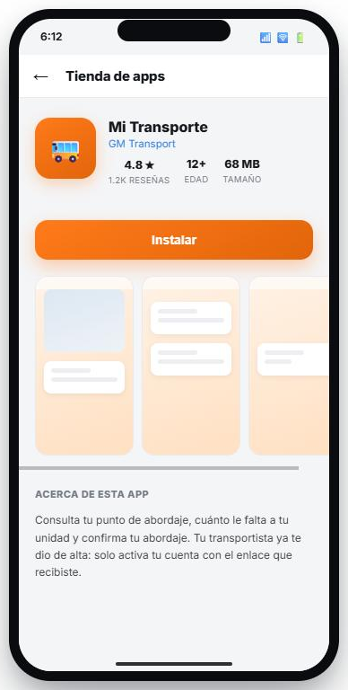
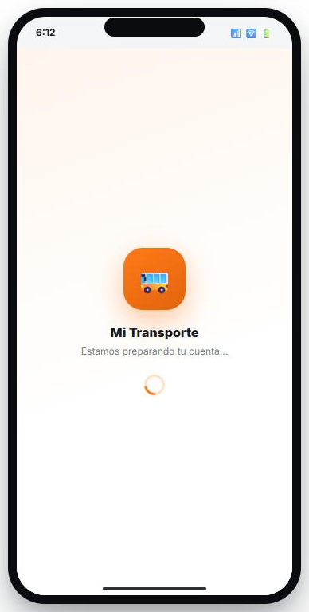
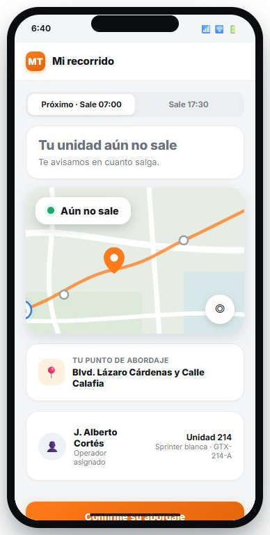

Este documento explica cómo es la app Mi Transporte y dónde se usa el logo, para que Mercadotecnia sepa qué necesita y en qué tamaños debemos recibirlo.
Mi Transporte es una app para las personas que van al trabajo en un transporte de personal. Sirve para que sepan cuándo llega su unidad. Va de la mano con el módulo Transporte de Personal del ERP: lo que la empresa o el transportista planea ahí es lo que la persona ve en su celular.
La usan los empleados de empresas que tienen transporte de personal, muchos en turnos de madrugada o de noche. No son usuarios técnicos y la abren con prisa, casi siempre en la parada. Las empresas y los transportistas se la dan a su gente como un beneficio.
Qué hace
Ventajas
Habla de tiempo y de llegar a la hora.
Amable y humana, no corporativa fría.
Una sola idea en cada pantalla.
Que la persona sienta que la unidad sí viene.
La app usa un naranja cálido como color principal. El logo debe llevarse bien con estos colores, porque se verá junto a ellos en todas las pantallas.
Estas son algunas pantallas de la app. El logo que aparece hoy es solo un dibujo temporal de un autobús y será reemplazado por el que entregue Mercadotecnia.

Tienda de appsÍcono de la app junto al nombre, en tamaño mediano.

Pantalla de bienvenidaLogo grande al centro mientras se prepara la cuenta.

Pantalla principalLogo pequeño en la esquina superior, junto al título.
También se usa en la notificación que recibe la persona en su celular, aunque la app esté cerrada, y en la invitación por correo para activar la cuenta.
Para poder integrar el logo en la app necesitamos recibir los siguientes archivos. Los demás tamaños los generamos nosotros a partir de estos.
| Uso | Tamaño | Formato | Indicaciones |
|---|---|---|---|
| Ícono en iPhone | 1024 x 1024 px | PNG | Cuadrado, sin esquinas redondeadas y sin transparencia. El sistema aplica el redondeado. |
| Ícono en Android | Primer plano 432 x 432 px y fondo 432 x 432 px | PNG | Dos capas separadas. El símbolo debe quedar dentro de un círculo central de 264 px para que no se recorte. |
| Ícono en la tienda de Android | 512 x 512 px | PNG | Mismo ícono, con fondo y sin esquinas redondeadas. |
| Notificación | 96 x 96 px | PNG | Solo el símbolo en blanco sobre fondo transparente, sin colores ni degradados. Android lo pinta del color de la app. |
| Pantalla de bienvenida | 1024 x 1024 px | PNG | Solo el símbolo, con fondo transparente y con margen alrededor. |
| Encabezado de la app | 160 x 160 px | PNG | Símbolo cuadrado que se verá a unos 40 px. Debe leerse bien de ese tamaño. |
| Correo de invitación | 600 px de ancho | PNG | Logo completo, símbolo con el nombre, con fondo transparente. |
| Archivo maestro | Vectorial | SVG o AI | Versión completa, solo símbolo y una versión en una sola tinta, para poder generar cualquier otro tamaño. |
Conviene entregar cada versión también para fondo oscuro, por si se necesita sobre un color intenso.